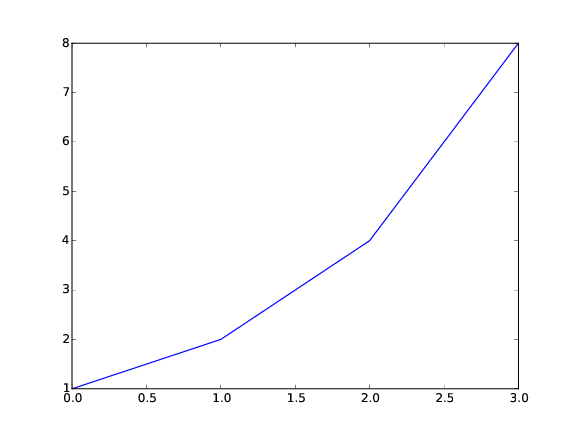

blog
1 Using filters to get pdf images into html export
import matplotlib.pyplot as plt plt.plot([1, 2, 4, 8]) plt.savefig('im.pdf')
Here is our inline image as a pdf file. We would like it to be converted to a png, and rendered in an html export. This is most easily done with a derived backend.

(defun my-link-format (link contents info) (let ((type (org-element-property :type link)) (path (org-element-property :path link))) (cond ((and (string= type "file") (string-match "\.pdf" path)) (shell-command (format "convert %s %s" path (replace-regexp-in-string "\.pdf" ".png" path))) (format "<img src=\"%s\">" (replace-regexp-in-string "\.pdf" ".png" path))) ;; anything else, we just do the regular thing (t (org-html-link link contents info))))) (org-export-define-derived-backend 'my-html 'html :translate-alist '((link . my-link-format))) (browse-url (org-export-to-file 'my-html "custom-link.html"))
#<process open custom-link.html>